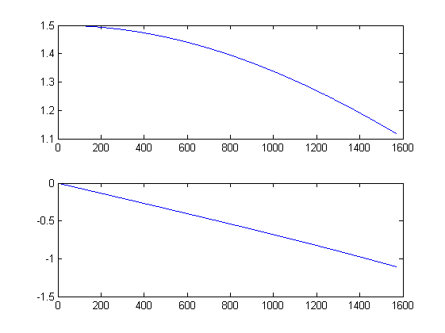

Laboratório nº 5 de Sistemas e sinais
Alunos: Ricardo Leitão nº69632 , Fábio Almeida nº70227
Turma/Turno: 3b
Grupo: 05
Data: 08/05/2012
Contents
Exercício 1. i)
t = 0:0.001:0.25; x1t = cos((pi/0.08)*t); x2t = cos((pi/0.04)*t); x3t = cos((pi/0.02)*t); n = 0:0.01:0.25; x1n = cos((pi/0.08)*n); x2n = cos((pi/0.04)*n); x3n = cos((pi/0.02)*n); figure(1) subplot(3,1,1), plot(t, x1t, n, x1n, 'o'); subplot(3,1,2), plot(t, x2t, n, x2n, 'o'); subplot(3,1,3), plot(t, x3t, n, x3n, 'o');
Exercício 1. ii)
O sistema SYS1 é caracterizado pela seguinte equação y(n)=x(n-2). Tendo uma entrada x(n)=exp(j*w*n) sabemos que a saída será y(n)=H(w)*exp(j*w*n), em que H(w) é a resposta em frequência. Sabendo isto é possível chegar à resposta em frequência substituindo a entrada e a saída na equação de SYS1.
H(w)*exp(j*w*n)=exp(j*w*(n-2)) '<'='>' H(w)*exp(j*w*n)=exp(j*w*n)*exp(-2j*w) '<'='>' H(w)=exp(-2j*w)
Exercício 1. iii)
w = 0.001:0.001:pi/2; H = exp(-2i*w); figure(2) mag = abs(H); subplot(2,1,1), plot(mag) fase = angle(H); subplot(2,1,2), plot(fase)
Exercício 1. iv)
function [y] = SYS1(x) s = zeros(2,1); l = size(x); y = zeros(1,l);
A = [0 0; 1 0]; B = [1 0]'; C = [0 1]; D = 0;
for n = 1:l s = A*s + B*x(n); y(n) = C*s + D*x(n); end
end
ed1 = SYS1(x1n); ed2 = SYS1(x2n); ed3 = SYS1(x3n); figure(3) subplot(3,1,1), plot(t, x1t, n, x1n, 'o', n, ed1, '*'); subplot(3,1,2), plot(t, x2t, n, x2n, 'o', n, ed2, '*'); subplot(3,1,3), plot(t, x3t, n, x3n, 'o', n, ed3, '*');
Exercício 1. v)
w1 = pi/0.08; w2 = pi/0.04; w3 = pi/0.02; H1 = exp(-2i*w1); z1 = abs(H1)*cos(w1*n + angle(H1)); H2 = exp(-2i*w2); z2 = abs(H2)*cos(w2*n + angle(H2)); H3 = exp(-2i*w3); z3 = abs(H3)*cos(w3*n + angle(H3)); figure(4) subplot(3,1,1), plot(t, x1t, n, x1n, 'o', n, ed1, '*', n, z1, 'd'); subplot(3,1,2), plot(t, x2t, n, x2n, 'o', n, ed2, '*', n, z2, 'd'); subplot(3,1,3), plot(t, x3t, n, x3n, 'o', n, ed3, '*', n, z3, 'd');
Exercício 2. i)
O sistema SYS2 é caracterizado pela seguinte equação y(n)=0.5x(n)+x(n-1). Tendo uma entrada x(n)=exp(j*w*n) sabemos que a saída será y(n)=H(w)*exp(j*w*n), em que H(w) é a resposta em frequência. Sabendo isto é possível chegar à resposta em frequência substituindo a entrada e a saída na equação de SYS1.
H(w)*exp(j*w*n)=0.5exp(j*w*n)+exp(j*w*(n-1)) '<'='>' H(w)*exp(j*w*n)=0.5exp(j*w*n)+exp(j*w*n)exp(-j*w) '<'='>' H(w)=0.5+exp(-j*w)
Exercício 2. ii)
w = 0.001:0.001:pi/2; H = 0.5+exp(-1i*w); figure(5) mag = abs(H); subplot(2,1,1), plot(mag) fase = angle(H); subplot(2,1,2), plot(fase)
Exercício 2. iii)
w1 = pi/0.08; w2 = pi/0.04; w3 = pi/0.02; H1 = 0.5+exp(-1i*w1); z1 = abs(H1)*cos(w1*n + angle(H1)); H2 = 0.5+exp(-1i*w2); z2 = abs(H2)*cos(w2*n + angle(H2)); H3 = 0.5+exp(-1i*w3); z3 = abs(H3)*cos(w3*n + angle(H3)); figure(6) subplot(3,1,1), plot(t, x1t, n, x1n, 'o', n, z1, 'd'); subplot(3,1,2), plot(t, x2t, n, x2n, 'o', n, z2, 'd'); subplot(3,1,3), plot(t, x3t, n, x3n, 'o', n, z3, 'd');
Execício 2.iv)
z = z1 + z2; figure(7) plot(n, z);
Exercício 3
function [tamanho] = Compressao(nome,trunc); RGB = imread(nome); I = rgb2gray(RGB); J = dct2(I); J(abs(J) < trunc) = 0; K = idct2(J); s = strcat('TDC',int2str(trunc),nome); r = strcat('Thereshold = ',int2str(trunc)); figure, imshow(K,[0 255]) xlabel(r) title(s); imwrite(K,s,'png'); info = imfinfo(s); tamanho = info.FileSize; end
Exercício 3.i)
RGB = imread('img_1.png'); figure, imshow('img_1.png'); xlabel('Imagem Original'); title('img_1.png'); compressao('img_1.png',5000); compressao('img_1.png',1000); compressao('img_1.png',600); compressao('img_1.png',200); compressao('img_1.png',20);

A qualidade da imagem é menor quanto maior for o thereshold, visto que o thereshold é o valor de truncagem dos valores da imagem tratada.
Exercício 3.ii)
RGB = imread('img_2.png'); figure, imshow('img_2.png'); xlabel('Imagem Original'); title('img_2.png'); compressao('img_2.png',5000); compressao('img_2.png',1000); compressao('img_2.png',600); compressao('img_2.png',200); compressao('img_2.png',20);